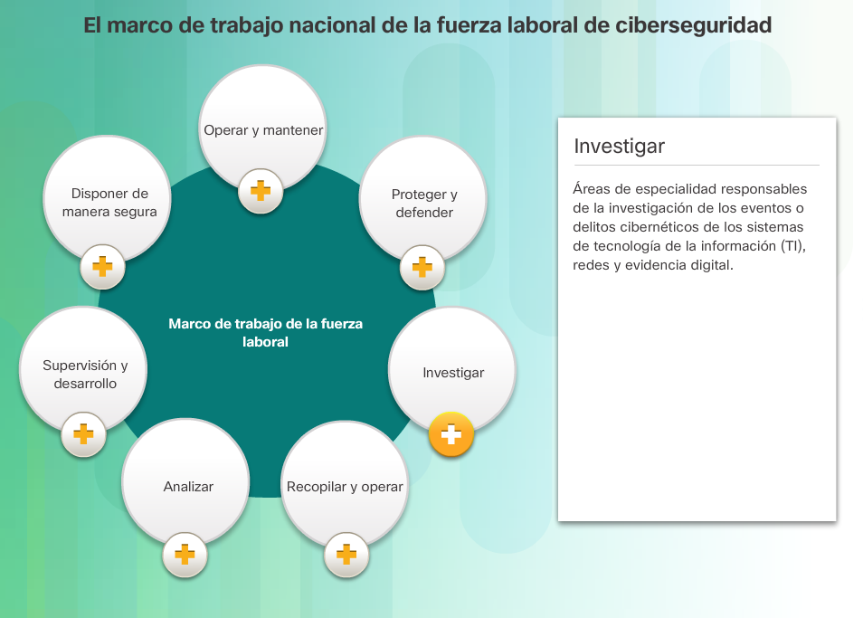
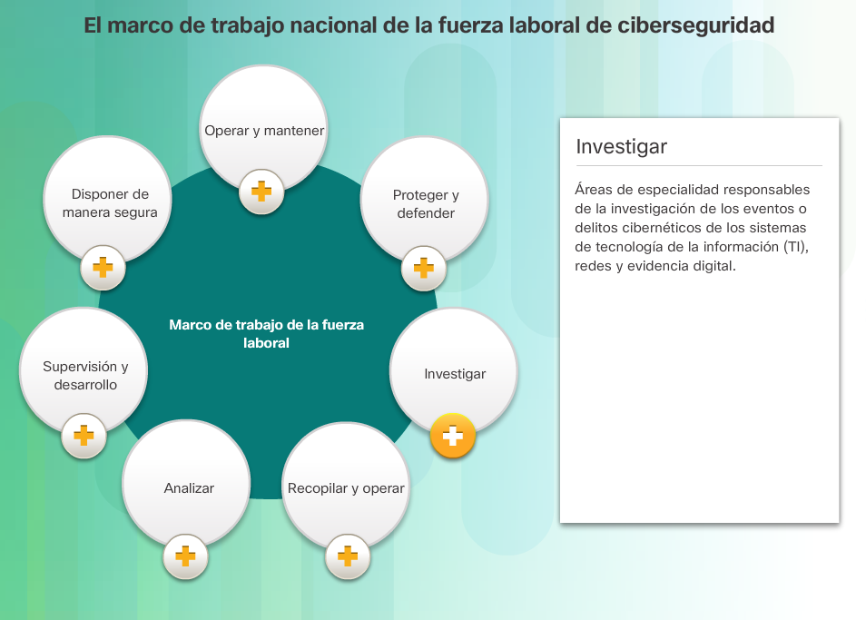
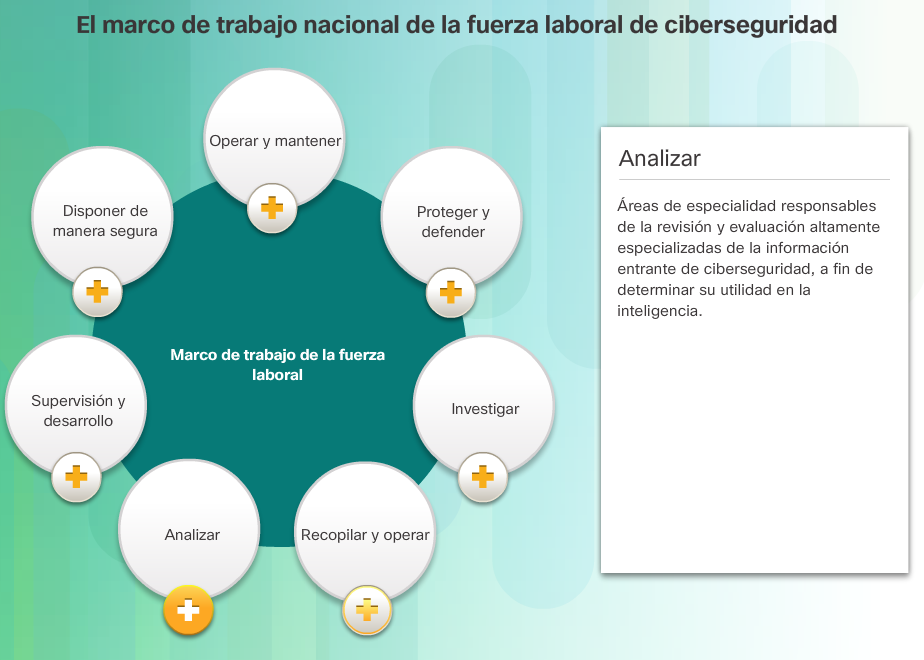
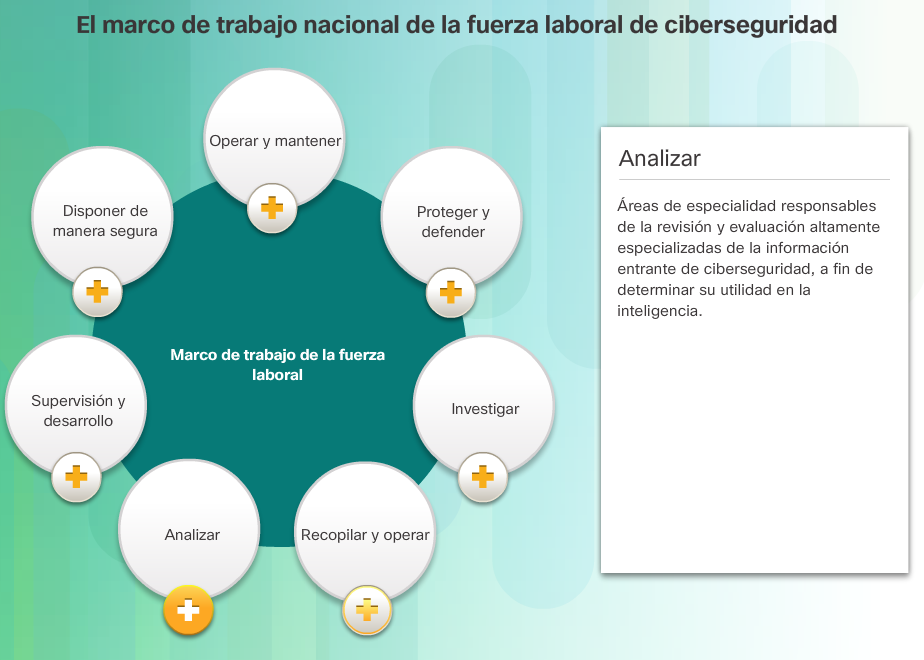
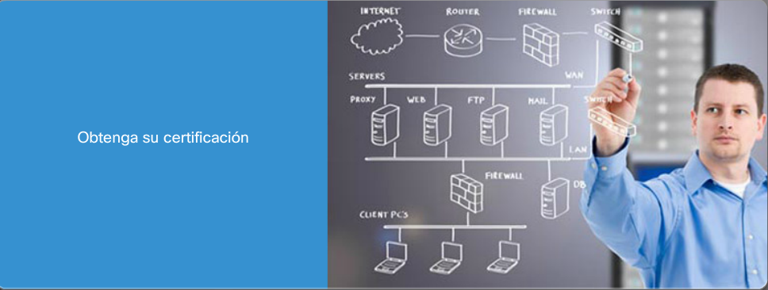

El panorama de la ciberseguridad
Los riesgos y las amenazas de ciberseguridad siempre están presentes en nuestro mundo. La infraestructura de redes e Internet son cada vez más vulnerables a una amplia variedad de ataques físicos y cibernéticos. Los delincuentes cibernéticos sofisticados, así como las naciones, aprovechan estas vulnerabilidades para robar información y dinero. Nuestras redes son particularmente difíciles de asegurar por varios motivos:
- Las redes están cada vez más integradas y son cada vez más complejas.
- Las redes están conectadas a dispositivos físicos.
- Los delincuentes cibernéticos pueden tener acceso a las redes desde cualquier lugar del mundo.
- Especialista en ciberseguridad
- Experto forense en ciberseguridad
- Experto en seguridad de la información
- Hacker ético
Una comunidad global
Cuando participa en Networking Academy, se suma a una comunidad global conectada por tecnologías y objetivos en común. En el programa, participan escuelas, institutos de enseñanza superior, universidades y otras entidades en más de 160 países. Clic Aquí para ver un vídeo
sobre cómo Cisco Networking Academy está cambiando el mundo.
Busque el sitio oficial de Cisco Networking Academy en Facebook© y LinkedIn©. En el sitio de Facebook, puede encontrarse e interactuar con otros estudiantes de Networking Academy de todo el mundo. El sitio de LinkedIn de Cisco Networking Academy lo conecta con ofertas de empleo, y puede ver la manera en que otras personas comunican sus aptitudes con eficacia.
Más que solo información
El entorno de aprendizaje de netacad.com es una parte importante de la experiencia general del curso para los estudiantes e instructores de Networking Academy. Este material del curso en línea incluye el texto del curso y medios interactivos relacionados, laboratorios en papel y muchos tipos diferentes de cuestionarios. Este material proporciona comentarios pertinentes para
ayudarlo a evaluar su progreso a lo largo del curso.
El material de este curso se presenta mediante una amplia variedad de tecnologías como texto, gráficos, voz, video e interacciones enriquecedoras. Estas tecnologías ayudan a facilitar la manera en que las personas trabajan, viven, juegan y aprenden.
La red e Internet afectan a las personas de distintas maneras en las distintas partes del mundo. Si bien trabajamos con instructores de todo el mundo para crear este material, es importante que trabaje con su instructor y sus compañeros de curso para asegurarse de que el contenido del curso se aplique a su situación local.

La ciberseguridad, un mundo de paladines, héroes y delincuentes.
Muchos de los hackers originales del mundo eran aficionados, programadores y estudiantes de informática durante los años 60. Originalmente, el término hacker describió a las personas con habilidades de programación avanzada. Los hackers utilizan estas
habilidades de programación para probar los límites y las capacidades de los primeros sistemas. Estos primeros hackers también estaban involucrados en el desarrollo de los primeros juegos de computadora. Muchos de estos juegos incluían paladines y destrezas.
A medida que la cultura de hacking evolucionaba, incorporó el léxico de estos juegos en la cultura en sí. Incluso el mundo exterior comenzó a proyectar la imagen de los paladines poderosos sobre esta cultura de hacking incomprendida.
Libros como Where Wizards Stay up Late: The Origins of The Internet (Cuando los paladines se quedan despiertos hasta tarde: los orígenes del Internet) publicado en 1996 agregó la mística de la cultura de hacking. La imagen y el léxico se estancaron. Muchos grupos de hacking hoy adoptan estas imágenes. Uno de los grupos de hacker más infames se lo conoce con el nombre de Legion of Doom.
Es importante comprender la cultura cibernética para comprender a los delincuentes del mundo cibernético y sus motivaciones.
Sun Tzu era un filósofo chino y guerrero en el siglo seis a. C. Sun Tzu escribió el libro llamado The Art of War (El arte de la guerra) que es un trabajo clásico sobre las estrategias disponibles para vencer al enemigo. Su libro ha orientado a los estrategas durante siglos.
Uno de los principios guía de Sun Tzu fue conocer a su oponente. Aunque él se refería específicamente a la guerra, gran parte de sus consejos se traducen en otros aspectos de la vida, incluidos los desafíos de la ciberseguridad. Este capítulo comienza explicando la estructura del mundo de la ciberseguridad y el motivo por el que sigue creciendo.
En este capítulo se analizará el rol de los delincuentes cibernéticos y sus motivaciones. Finalmente, en el capítulo se explica cómo convertirse en un especialista en ciberseguridad. Estos héroes cibernéticos ayudan a vencer a los delincuentes cibernéticos que amenazan el mundo cibernético.
Descripción general de los reinos.
Existen muchos grupos de datos que conforman el “mundo cibernético”. Cuando los grupos pueden recopilar y utilizar enormes cantidades de datos, comienzan a acumular poder e influencia. Estos datos pueden estar en la forma de números, imágenes, video, audio o cualquier tipo de datos que puedan digitalizarse. Estos grupos podrían resultar tan poderosos que funcionan como si fueran reinos. Empresas como Google, Facebook y LinkedIn se pueden considerar castillos de datos en la analogía del reino del mundo cibernético. Si extendemos aún más la analogía, las personas que trabajan en estas empresas digitales podrían considerarse paladines cibernéticos.
Castillos del mundo cibernético.
Los paladines cibernéticos en Google crearon uno de los primeros y más poderosos castillos del reino cibernético. Miles de millones de personas utilizan Google para buscar en la red diariamente. Google ha creado lo que podría considerarse la red más grande de recopilación de datos del mundo. Google desarrolla Android, los sistemas operativos instalados en más del 80 % de todos los dispositivos móviles conectados
a Internet. Cada dispositivo requiere que los usuarios creen cuentas de Google que pueden guardar marcadores e información de la cuenta, guardar los resultados de búsqueda, e incluso ubicar el dispositivo. Google, Facebook es otro castillo poderoso en el reino cibernético. Los paladines cibernéticos en Facebook reconocieron que
las personas crean cuentas personales a diario para comunicarse con amigos y familiares. Al hacerlo, proporcionan muchos datos personales. Estos paladines de Facebook formaron un castillo masivo de datos para ayudar a las personas a conectarse de maneras nunca antes imaginadas en el pasado. Facebook afecta la vida de millones de personas a diario y permite a las empresas y las organizaciones comunicarse con las personas de manera más personal y orientada.
LinkedIn es otro castillo de datos en el reino cibernético. Los paladines cibernéticos de LinkedIn reconocieron que sus miembros compartirían información en la búsqueda de crear una red profesional. Los usuarios de LinkedIn cargan esta información para crear perfiles en línea y conectarse con otros miembros. LinkedIn conecta a los empleados con los empleadores y a las empresas con otras empresas de todo el mundo.
Una mirada dentro de estos castillos revela cómo están diseñados. En un nivel fundamental, estos castillos son firmes debido a la capacidad para recopilar datos del usuario que contribuyen los usuarios. Estos datos incluyen a menudo los antecedentes de los usuarios, discusiones, preferencias, ubicaciones, viajes, intereses, amigos y miembros de la familia, profesiones, pasatiempos y programas de trabajo y personales.
Los paladines cibernéticos crean un gran valor para las organizaciones interesadas en usar estos datos para comprender y comunicarse mejor con sus clientes y empleados.
El crecimiento de los reinos cibernéticos
Los datos recopilados del mundo cibernético van más allá de los datos que los usuarios contribuyen voluntariamente. El reino cibernético continúa creciendo a medida que la ciencia y la tecnología evolucionan, lo que permite que los paladines cibernéticos recopilen otras formas de datos. Los paladines cibernéticos ahora cuentan con la tecnología para hacer un seguimiento de las tendencias mundiales del clima,
monitorear los océanos y seguir el movimiento y el comportamiento de las personas, los animales y los objetos en tiempo real.
Surgieron nuevas tecnologías, como los Sistemas de información geoespaciales (GIS) y el Internet de todo (IdT). Estas nuevas tecnologías pueden seguir los tipos de árboles de un vecindario y proporcionar ubicaciones actualizadas de los vehículos, los dispositivos, las personas y los materiales. Este tipo de información puede ahorrar energía, mejorar la eficiencia y reducir los riesgos de seguridad.
Cada una de estas tecnologías también expandirá de manera exponencial la cantidad de datos recopilados, analizados y utilizados para comprender el mundo. Los datos recopilados por GIS y el IdT constituyen un gran desafío para los profesionales de la ciberseguridad en el futuro. El tipo de datos generado por estos dispositivos tiene el potencial para permitir a los delincuentes cibernéticos obtener acceso a los aspectos muy íntimos de la vida cotidiana.
¿Quiénes son los delincuentes cibernéticos?
En los primeros años del mundo de la ciberseguridad, los delincuentes cibernéticos típicos eran adolescentes o aficionados que operaban desde una PC doméstica, y sus ataques se limitaban a bromas y vandalismo. Actualmente, el mundo de los delincuentes cibernéticos se ha vuelto más peligroso. Los atacantes son personas o grupos que intentan atacar las vulnerabilidades para obtener una ganancia personal o financiera.
Los delincuentes cibernéticos están interesados en todo, desde las tarjetas de crédito hasta los diseños de producto y todo lo que tenga valor.
Aficionados: los aficionados, o script kiddies, tienen pocas habilidades o ninguna, y generalmente usan herramientas existentes o instrucciones que se encuentran en Internet para realizar ataques. Algunos solo son curiosos, mientras que otros intentan demostrar sus habilidades y causar daños. Pueden utilizar herramientas básicas, pero los resultados aún pueden ser devastadores.
Hackers: este grupo de delincuentes penetran en las computadoras o redes para obtener acceso por varios motivos. La intención por la que interrumpen determina la clasificación de estos atacantes como delincuentes de sombrero blanco, gris o negro. Los atacantes de sombrero blanco penetran en las redes o los sistemas informáticos para descubrir las debilidades a fin de mejorar la seguridad de estos sistemas.
Los propietarios del sistema les otorgan permiso para realizar la interrupción y reciben los resultados de la prueba. Por otro lado, los atacantes de sombrero negro aprovechan las vulnerabilidades para obtener una ganancia ilegal personal, financiera o política. Los atacantes de sombrero gris están en algún lugar entre los atacantes de sombrero blanco y negro. Los atacantes de sombrero gris pueden encontrar una vulnerabilidad y señalarla a los propietarios del sistema si esa acción coincide con sus propósitos.
Algunos hackers de sombrero gris publican los hechos sobre la vulnerabilidad en Internet para que otros atacantes puedan sacarles provecho.
La figura ofrece detalles sobre los términos hacker de sombrero blanco, negro y gris.
Hackers organizados: estos hackers incluyen organizaciones de delincuentes informáticos, hacktivistas, terroristas y hackers patrocinados por el estado. Los delincuentes cibernéticos generalmente son grupos de delincuentes profesionales centrados en el control, la energía y la riqueza. Los delincuentes son muy sofisticados y organizados, e incluso pueden proporcionar el delito cibernético como un servicio. Los hacktivistas hacen declaraciones políticas para concientizar sobre los problemas que son importantes
para ellos. Los hacktivistas publican de manera pública información embarazosa sobre sus víctimas. Los atacantes patrocinados por el estado reúnen inteligencia o sabotean en nombre de su gobierno. Estos atacantes suelen estar altamente capacitados y bien financiados. Sus ataques se centran en objetivos específicos que resultan beneficiosos para su gobierno. Algunos atacantes patrocinados por el estado son incluso miembros de las fuerzas armadas de sus países.
La figura describe los hackers de sombrero blanco como los hackers éticos que utilizan sus habilidades de programación para propósitos buenos, éticos y legales. Los hackers de sombrero blanco pueden realizar pruebas de penetración de redes en el intento de comprometer los sistemas y las redes usando sus conocimientos de los sistemas de seguridad informática para descubrir las vulnerabilidades de la red. Las vulnerabilidades en la seguridad se informan a los desarrolladores para que las corrijan antes de que las vulnerabilidades
puedan aprovecharse.
Algunas organizaciones otorgan premios o recompensas a los hackers de sombrero blanco cuando informan una vulnerabilidad. Los hackers de sombrero gris son personas que cometen delitos y hacen cosas probablemente poco éticas, pero no para beneficio personal o ni para causar daños. Un ejemplo sería alguien que pone en riesgo una red sin permiso y luego divulga la vulnerabilidad públicamente. Un hacker de sombrero gris puede divulgar una vulnerabilidad la organización afectada después de haber puesto en peligro la red.
Esto permite que la organización solucione el problema. Los hackers de sombrero negro son delincuentes poco éticos que violan la seguridad de una computadora y una red para beneficio personal o por motivos maliciosos, como ataques a la red. Los hackers de sombrero negro atacan las vulnerabilidades para comprometer la computadora y los sistemas de red.


Actividad: Identficar el color del sombrero.

Motivos de los delincuentes cibernéticos
Los perfiles de los delincuentes cibernéticos y los motivos han cambiado a lo largo de los años. El hacking comenzó en los años 60 con el «phone freaking» (o el «phreaking»), una actividad que hace referencia al uso de diversas frecuencias de audio para manipular los sistemas telefónicos. A mediados de los años 80, los delincuentes utilizaban módems de internet por acceso telefónico de la computadora para conectar las computadoras a las redes y utilizaban programas de descifrado de contraseñas para obtener acceso a los datos.
Hoy en día, los delincuentes van más allá del robo de información. Los delincuentes ahora pueden usar el malware y los virus como instrumentos de alta tecnología. Sin embargo, la motivación más grande para la mayoría de los delincuentes cibernéticos es financiera. Los delitos cibernéticos se han vuelto más lucrativos que las transacciones de las drogas ilegales.
Los perfiles generales del hacker y los motivos han cambiado un poco. La figura muestra los términos de hacking modernos y una breve descripción de cada una.
¿Por qué convertirse en un especialista en ciberseguridad?
La demanda de especialistas en ciberseguridad ha crecido más que la demanda de otros trabajos de TI. Toda la tecnología que transforma el reino y mejora la forma de vida de las personas también puede hacerlos más vulnerables a los ataques. La tecnología en sí misma no puede prevenir, detectar, responder ni recuperarse de los incidentes de ciberseguridad. Considere lo siguiente:
- El nivel de habilidad que requiere un especialista eficiente en cberseguridad y la escasez de profesionales cualificados en ciberseguridad se traduce en la posibilidad de mayores ingresos.
- La tecnología de la información cambia constantemente. Esto también es cierto para la ciberseguridad. La naturaleza muy dinámica del campo de la ciberseguridad puede ser difícil y fascinante.
- La carrera de un especialista en ciberseguridad también es muy transferible. Los trabajos en casi todas las ubicaciones geográficas.
- Los especialistas en ciberseguridad proporcionanun servicio necesario a sus orgranizaciones, países y empresas, casi como las autoridades encargadas del orden público o los equipos de respuesta ante una emergencia.

¿Cómo frustrar a los delincuentes cibernéticos
Frustrar a los delincuentes cibernéticos es una tarea difícil y no existe algo como una «fórmula mágica». Sin embargo, las empresas, el gobierno y las organizaciones internacionales han comenzado a tomar medidas coordinadas para limitar o mantener a raya a los delincuentes cibernéticos. Las acciones coordinadas incluyen las siguientes:
- La creación de bases de datos completas de firmas conocidas de vulnerabilidades y ataques del sistema (una disposición única de la información que se utiliza para identificar el intento de un atacante de explotar una vulnerabilidad conocida). Las organizaciones comparten estas bases de datos en todo el mundo para ayudar a prepararse y mantener alejados muchos ataques comunes.
- Establecimiento de sensores de advertencia temprana y redes de alerta. Debido al costo y la imposibilidad de supervisar cada red, las organizaciones supervisan los objetivos de gran valor o crean impostores que se parecen a los objetivos de gran valor. Debido a que estos objetivos de gran valor tienen más probabilidades de experimentar los ataques, advierten a otros de los ataques potenciales.
- Intercambio de información de inteligencia cibernética. Las empresas, los organismos gubernamentales y los países ahora colaboran para compartir información esencial sobre los ataques graves a los objetivos fundamentales para evitar ataques similares en otros lugares. Muchos países han establecido agencias de inteligencia cibernética para colaborar en todo el mundo en la lucha contra los ciberataques importantes.
- Establecimiento de estándares de administración de seguridad de la información entre organizaciones nacionales e internacionales. ISO 27000 es un buen ejemplo de estos esfuerzos internacionales.
- Promulgación de nuevas leyes para desalentar los ataques cibernéticos y las violaciones de datos. Estas leyes tienen multas severas para penalizar a los delincuentes cibernéticos que realicen acciones ilegales.
Actividad: Identificar las contramedidas de ciberseguridad usadas para frustar a los delincuentes cibernéticos

Práctica de laboratorio: Búsqueda de trabajo en ciberseguridad.
Amenazas a las personas del reino
Los paladines cibernético sin innovadores y visionarios que crean el reino cibernético. Tienen la inteligencia y el conocimiento para reconocer el poder de los datos y aprovechan ese poder para crear grandes organizaciones, proporcionar servicios y proteger a las personas de los ciberataques Los paladines cibernéticos reconocen la amenaza que presentan los datos si se utilizan contra las personas.
Las amenazas y vulnerabilidades son la principal inquietud de los paladines cibernéticos. Una amenaza a la ciberseguridad es la posibilidad de que ocurra un evento nocivo, como un ataque. La vulnerabilidad es una debilidad que hace que un objetivo sea susceptible a un ataque. Por ejemplo, los datos en manos incorrectas pueden provocar la pérdida de privacidad para los propietarios,
pueden afectar su crédito o comprometer sus relaciones profesionales o personales. El robo de identidad es un gran negocio. Sin embargo, Google y Facebook no son necesariamente los que presentan el riesgo más grande. Las escuelas, los hospitales, las instituciones financieras, los organismos gubernamentales, el lugar de trabajo y el comercio electrónico plantean mayores riesgos.
Las organizaciones como Google y Facebook cuentan con los recursos para contratar grandes talentos en ciberseguridad para proteger sus castillos. A medida que las organizaciones desarrollan los castillos de datos, aumenta la necesidad de profesionales de la ciberseguridad. Esto deja a las empresas y organizaciones más pequeñas en la competencia por el grupo restante de profesionales de la ciberseguridad.
Las amenazas cibernéticas son particularmente peligrosas para algunos sectores y los registros que deben mantener.
Tipos de registros personales
Los siguientes ejemplos son algunas fuentes de datos que pueden provenir de organizaciones establecidas.
Historias clínicas
Ir al consultorio médico da como resultado la adición de más información a una historia clínica electrónica (EHR). La prescripción de su médico de cabecera se vuelve parte de la EHR. Una EHR incluye el estado físico y mental, y otra información personal que puede no estar relacionada médicamente. Por ejemplo, una persona va a terapia cuando era niño debido a cambios importantes en la familia.
Esto aparecerá en alguna parte de su historia clínica. Además de la historia clínica y la información personal, la EHR también puede incluir información sobre la familia de esa persona. Varias leyes abordan la protección de los registros de pacientes.
Los dispositivos médicos, como las bandas de estado físico, utilizan la plataforma de la nube para permitir la transferencia, el almacenamiento y la visualización inalámbricos de los datos clínicos, como el ritmo cardíaco, la presión arterial y el azúcar en sangre. Estos dispositivos pueden generar una enorme cantidad de datos clínicos que pueden volverse parte de sus historias clínicas.
Registros educativos
Los registros educativos incluyen información sobre calificaciones, puntajes de evaluaciones, asistencia, cursos realizados, premios, grados otorgados e informes disciplinarios. Este registro también puede incluir información de contacto, salud y registros de la inmunización, y registros de educación especial, incluidos los programas educativos individualizados (IEP).
Registros de empleo y financieros
La información de empleo puede incluir empleos y rendimientos pasados. Los registros de empleo también pueden incluir información sobre sueldos y seguros. Los registros financieros pueden incluir información sobre ingresos y gastos. Los registros de impuestos pueden incluir talones de cheques de pago, resúmenes de la tarjeta de crédito, calificación de crédito e información bancaria.

Amenazas a los servicios del reino
Los servicios del reino son los mismos servicios que necesita una red y, en última instancia, Internet para operar. Estos servicios incluyen routing, asignación de direcciones, designación de nombres y administración de bases de datos. Estos servicios también sirven como objetivos principales para los delincuentes cibernéticos.
Los delincuentes utilizan herramientas de análisis de paquetes para capturar flujos de datos en una red. Esto significa que todos los datos confidenciales, como nombres de usuario, contraseñas y números de tarjetas de crédito, están en riesgo. Los analizadores de protocolos de paquetes supervisan y registran toda la información que proviene de una red.
Los delincuentes pueden utilizar además dispositivos falsos, como puntos de acceso a Wi-Fi no seguros. Si el delincuente configuran estos dispositivos cerca de un lugar público, como una cafetería, las personas desprevenidas pueden conectarse y el analizador de protocolos copiará su información personal.
El Servicio de nombres de dominio (DNS) traduce un nombre de dominio, por ejemplo www.facebook.com en su dirección IP numérica. Si un servidor DNS no conoce la dirección IP, consultará a otro servidor DNS. Con una suplantación de identidad DNS (o envenenamiento de caché DNS), el delincuente introduce datos falsos en la caché de resolución de DNS.
Estos ataques de envenenamiento atacan una debilidad en el software DNS que hace que los servidores DNS redirijan el tráfico de un dominio específico a la computadora del delincuente, en lugar de redirigirlo al propietario legítimo del dominio.
Los paquetes transportan datos a través de una red o de Internet. La falsificación del paquete (o la inyección de paquetes) interfiere con una comunicación de red establecida mediante la creación de paquetes para que parezca como si fueran parte de una comunicación. La falsificación de paquetes permite a un delincuente alterar o interceptar los paquetes.
Este proceso permite a los delincuentes secuestrar una conexión autorizada o denegar la capacidad de una persona para usar determinados servicios de red. Los profesionales cibernéticos denominan esta actividad un ataque man-in-the-middle.
Los ejemplos dado solo son ejemplos generales de los tipos de amenazas que los delincuentes pueden lanzar contra los servicios del reino.
Amenazas en los sectores del reino
Los sectores del reino incluyen los sistemas de infraestructura como la fabricación, la energía, la comunicación y el transporte. Por ejemplo, la matriz inteligente es una mejora del sistema de distribución y generación eléctrica. La matriz eléctrica lleva la energía de los generadores centrales a un gran número de clientes.
Una matriz inteligente utiliza la información para crear una red avanzada y automatizada de distribución de energía. Los líderes globales reconocen que la protección de la infraestructura es fundamental para proteger su economía.
Durante la última década, los ciberataques como Stuxnet demostraron que un ataque cibernético puede destruir o interrumpir con éxito las infraestructuras críticas. Específicamente, el ataque de Stuxnet apuntó al sistema de control de supervisión y adquisición de datos (SCADA) utilizados para controlar y supervisar los procesos industriales.
El SCADA puede ser parte de diversos procesos industriales de los sistemas de fabricación, producción, energía y comunicación. Haga clic aquí para ver más información sobre el ataque de Stuxnet.
Un ataque cibernético podría anular o interrumpir los sectores industriales como los sistemas de telecomunicaciones, de transporte o de generación y distribución de energía eléctrica. También puede interrumpir el sector de servicios financieros. Uno de los problemas con los entornos que incorporan un SCADA es que los diseñadores no se conectaron el
SCADA al entorno de TI tradicional e Internet. Por lo tanto, no tuvieron en cuenta la ciberseguridad de manera adecuada durante la fase de desarrollo de estos sistemas. Como otros sectores, las organizaciones que utilizan los sistemas SCADA reconocen el valor de la recopilación de datos para mejorar las operaciones y disminuir los costos.
La tendencia resultante es conectar los sistemas SCADA a los sistemas de TI tradicionales. Sin embargo, esto aumenta la vulnerabilidad de los sectores que utilizan los sistemas SCADA.
El potencial avanzado de amenazas que existe en los reinos en la actualidad exige una generación especial de especialistas en ciberseguridad.

Amenazas a la forma de vida del reino
La ciberseguridad es el esfuerzo constante por proteger los sistemas de red y los datos del acceso no autorizado. A nivel personal, todas las personas necesitan proteger su identidad, sus datos y sus dispositivos informáticos. A nivel corporativo , es responsabilidad de los empleados proteger la reputación, los datos y los clientes de la organización.
A nivel A nivel estatal, la seguridad nacional y la seguridad y el bienestar de los ciudadanos están en juego. Los profesionales de ciberseguridad a menudo están involucrados en el trabajo con los organismos gubernamentales en la identificación y recopilación de datos.
En EE. UU., la Agencia de Seguridad Nacional (NSA) es responsable de las actividades de recopilación y vigilancia de inteligencia. La NSA creó un nuevo centro de datos para procesar el volumen de información cada vez mayor. En 2015, el Congreso de EE. UU. aprobó la Ley de Libertad de EE. UU. que ponía fin a la práctica de recopilar de forma masiva
los registros telefónicos de los ciudadanos de EE. UU. El programa proporcionó los metadatos y otorgó a la NSA información sobre las comunicaciones enviadas y recibidas.
Los esfuerzos por proteger la forma de vida de las personas a menudo entran en conflicto con su derecho a la privacidad. Será interesante ver qué sucede con el equilibrio entre estos derechos y la seguridad del reino.
Práctica de laboratorio: Identificación de amenazas.
Práctica de laboratorio: Identificación de amenazas.
Amenazas internar y externas.
Amenazas de seguridad internas
Los ataques pueden originarse dentro de una organización o fuera de ella, como se muestra en la figura. Un usuario interno, como un empleado o un partner contratado, puede de manera accidental o intencional:- Manipular de manera incorrecta los datos confidenciales
- Amenazar las operaciones de los servidores internos o de los dispositivos de la infraestructura de red
- Facilitar los ataques externos al conectar medios USB infectados al sistema informático corporativo
- Invitar accidentalmente al malware a la red con correos electrónicos o páginas web maliciosos
Amenazas de seguridad externas
Las amenazas externas de los aficionados o de los atacantes expertos pueden explotar las vulnerabilidades en los dispositivos conectados a la red o pueden utilizar la ingeniería social, como trucos, para obtener acceso. Los ataques externos aprovechan las debilidades o vulnerabilidades para obtener acceso a los recursos internos.Datos tradicionales
Los datos corporativos incluyen información del personal, de propiedad intelectual y datos financieros. La información del personal incluye el material de las postulaciones, la nómina, la carta de oferta, los acuerdos del empleado, y cualquier información utilizada para tomar decisiones de empleo. La propiedad intelectual, como patentes, marcas registradas y planes de nuevos productos, permite a una empresa obtener una ventaja económica sobre sus competidores. Considere esta propiedad intelectual como un secreto comercial; perder esta información puede ser desastroso para el futuro de la empresa. Los datos financieros, como las declaraciones de ingresos, los balances y las declaraciones de flujo de caja brindan información sobre el estado de la empresa.El gráfico clasifica los diferentes tipos de delincuentes cibernéticos. Entre los atacantes externos, se incluyen los atacantes organizados, como los hacktivistas, terroristas y piratas informáticos patrocinados por el estado, como los de sombrero negro, gris y blanco, y aficionados. Los iniciados son empleados, ex empleados, personal contratado y partners de confianza.

Las vulnerabilidades de los dispositivos móviles
´En el pasado, los empleados generalmente utilizaban computadoras de la empresa conectadas a una LAN corporativa. Los administradores supervisan y actualizan continuamente estas computadoras para cumplir con los requisitos de seguridad. En la actualidad, los dispositivos móviles como iPhones, smartphones, tablets y miles de otros dispositivos son sustitutos poderosos o agregados de las computadoras tradicionales. La gente usa cada vez más estos dispositivos para tener acceso a la información de la empresa. Bring Your Own Device (BYOD) es una tendencia en crecimiento. La incapacidad para administrar y actualizar de manera central los dispositivos móviles presenta una amenaza en crecimiento para las organizaciones que permiten el uso de dispositivos móviles de los empleados en sus redes.
El surgimiento del Internet de las cosas
El Internet de las cosas (IdC ) es el conjunto de tecnologías que permiten la conexión de varios dispositivos a Internet. La evolución tecnológica asociada con la llegada del IdC está cambiando los entornos comerciales y de consumidores. Las tecnologías del IdC permiten que las personas
conecten miles de millones de dispositivos a Internet. Estos dispositivos incluyen trabas, motores y dispositivos de entretenimiento, solo por mencionar algunos ejemplos. Esta tecnología afecta la cantidad de datos que necesitan protección. Los usuarios acceden a estos dispositivos en
forma remota, lo cual aumenta la cantidad de redes que requieren protección.
Con el surgimiento del IdC, hay muchos más datos que deben administrarse y protegerse. Todas estas conexiones, además de la capacidad y los servicios de almacenamiento expandidos que se ofrecen a través de la nube y la virtualización, han generado el crecimiento exponencial de los datos.
Esta expansión de datos ha creado una nueva área de interés en la tecnología y los negocios denominada "datos masivos".
El impacto de los datos masivos
Los datos masivos son el resultado de los conjuntos de datos que son grandes y complejos, lo que hace que las aplicaciones tradicionales de procesamiento de datos sean inadecuadas. Los datos masivos presentan desafíos y oportunidades según tres dimensiones:
- El volumen o la cantidad de datos
- La velocidad de los datos
- La variedad o el rango de los tipos y fuentes de datos
Uso de instrumentos avanzados
Las vulnerabilidades de software actualmente tienen como base los errores de programación, las vulnerabilidades de protocolo o las configuraciones erróneas del sistema. El delincuente cibernético tan solo tiene que aprovechar una de estas. Por ejemplo, un ataque común fue la construcción de una
entrada a un programa para sabotear el programa, haciendo que funcione mal. Este mal funcionamiento proporcionó una entrada al programa o provocó que filtre información.
Actualmente, se percibe una creciente sofisticación en los ciberataques. Una amenaza persistente avanzada (APT) es una amenaza continua a las computadoras que se realizan en el radar contra un objeto específico. Los delincuentes eligen generalmente una APT por motivos políticos o empresariales.
Una APT se produce durante un período prolongado con un alto nivel de confidencialidad utilizando malware sofisticado.
Los ataques a los algoritmos pueden rastrear los datos de informe propio de un sistema, como la cantidad de energía que utiliza una computadora, y usar esa información para seleccionar los objetivos o para activar alertas falsas. Los ataques algorítmicos también pueden desactivar una computadora
forzándola a usar memoria o a trabajar demasiado su unidad de procesamiento central. Los ataques a los algoritmos son más taimados porque atacan a los diseños utilizados para mejorar el ahorro de energía, disminuir las fallas del sistema y mejorar las eficiencias.
Por último, la nueva generación de ataques involucra la selección inteligente de víctimas. En el pasado, los ataques seleccionaban las opciones más fáciles o las víctimas más vulnerables. Sin embargo, con más atención a la detección y el aislamiento de los ciberataques, los delincuentes cibernéticos
deben ser más cuidadosos. No pueden arriesgar la detección temprana o los especialistas en ciberseguridad cerrarán las puertas del castillo. Como resultado, muchos de los ataques más sofisticados solo se lanzarán si el atacante puede igualar la firma objeto del objetivo.
Un alcance más amplio y el efecto cascada
La administración de identidades federada se refiere a varias empresas que permiten a los usuarios utilizar las mismas credenciales de identificación que obtienen acceso a las redes de todas las empresas del grupo. Esto amplía el alcance y aumenta las posibilidades de un efecto en cascada si se produce un ataque. Una identidad federada conecta la identidad electrónica de un sujeto mediante sistemas de administración de identidades separados. Por ejemplo, un sujeto puede iniciar sesión en Yahoo! con credenciales de Google o de Facebook. Este es un ejemplo de inicio de sesión social. El objetivo de la administración de identidades federada es compartir la información de identidad automáticamente a través de los límites del castillo. Desde la perspectiva del usuario particular, esto significa un único inicio de sesión a la red. Es imprescindible que las organizaciones escudriñen la información de identificación compartida con los partners. Los números de seguridad social, los nombres y las direcciones pueden permitir a los ladrones de identidad la oportunidad de robar esta información del partner para perpetrar un fraude. La manera más común de proteger la identidad federada es vincular la capacidad de inicio de sesión a un dispositivo autorizado.
Implicaciones de seguridad
Los centros de llamadas de emergencia en EE. UU. son vulnerables a los ciberataques que podrían apagar las redes de 911 y comprometer así la seguridad pública. Un ataque de denegación de servicios telefónicos (TDoS) utiliza las llamadas telefónicas a una red telefónica objetivo, lo que condiciona el sistema y evita que las llamadas legítimas pasen. Los centros de llamadas 911 de próxima generación son vulnerables porque utilizan los sistemas de voz sobre IP (VoIP) en lugar de líneas fijas tradicionales. Además de los ataques de TDoS, estos centros de llamadas también pueden estar a merced de ataques de denegación de servicio distribuido (DDoS) que utilizan muchos sistemas para saturar los recursos del objetivo, lo que hace que este no esté disponible para los usuarios legítimos. En la actualidad, existen muchas maneras de solicitar la ayuda del 911, desde el uso de una aplicación en un smartphone hasta un sistema de seguridad en el hogar.
Reconocimiento mejorado de las amenazas a la ciberseguridad
Las defensas contra los ciberataques al inicio de la era cibernética eran bajas. Un estudiante inteligente de escuela secundaria o script kiddie podría tener acceso a los sistemas. Los países de todo el mundo son más conscientes de las amenazas de los ciberataques. La amenaza que presentaron los ciberataques ahora encabezan la lista de las mayores amenazas a la seguridad nacional y económica en la mayoría de los países.
Cómo abordar la escasez de especialistas en ciberseguridad
En EE. UU., el Instituto Nacional de Normas y Tecnologías (NIST) creó un marco de trabajo para las empresas y las organizaciones que necesitan profesionales en el área de la ciberseguridad. El marco de trabajo les permite a las empresas identificar los tipos principales de responsabilidades, los cargos y destrezas de la fuerza laboral necesarias. El marco de trabajo nacional de la fuerza laboral de ciberseguridad clasifica y describe el trabajo de ciberseguridad. Proporciona un lenguaje común que define el trabajo de ciberseguridad junto con un conjunto común de tareas y habilidades requeridas para convertirse en un especialista en ciberseguridad. El marco de trabajo ayuda a definir los requisitos profesionales en ciberseguridad.
Siete categorías de paladines en el área de la ciberseguridad
El marco de la fuerza laboral categoriza el trabajo en ciberseguridad en siete categorías:
- Operar y mantener. Incluye proporcionar soporte técnico, administración, y el mantenimiento necesario para garantizar el rendimiento y la seguridad de los sistemas de TI.
- Proteger y defender Incluye la identificación, el análisis y la mitigación de amenazas a los sistemas internos y redes internas.
- Investigar Incluye la investigación de los eventos cibernéticos o los delitos informáticos que involucran a los recursos de TI.
- Recopilar y operar Incluye operaciones especializadas de ataque y engaño, y la recopilación de información sobre ciberseguridad.
- AnalizarIncluye la revisión y evaluación altamente especializada de la información entrante de ciberseguridad para determinar si es útil para la inteligencia.
- Supervisión y desarrollo establece el liderazgo, la administración y la dirección para realizar el trabajo de ciberseguridad de manera eficaz.
- Disponer de manera seguraincluye conceptualización, diseño y creación de sistemas de TI seguros.
La figura muestra cada una de las categorías y una breve descripción de cada uno.

 

 



Actividad: Identificar el área de especialidad en ciberseguridad NIST/NICE

Organizaciones profesionales
Los especialistas en ciberseguridad deben colaborar a menudo con colegas profesionales. Las organizaciones internacionales de tecnología a menudo patrocinan talleres y conferencias. Estas organizaciones generalmente mantienen inspirados y motivados a los profesionales de la ciberseguridad.
El Equipo de respuesta ante emergencias informáticas (CERT) es una iniciativa financiada por el gobierno de EE. UU., desarrollada para trabajar con la comunidad de Internet en la detección y resolución de los incidentes de seguridad informática. El Centro de coordinación del CERT (CERT/CC) coordina la comunicación entre los expertos durante emergencias de seguridad para ayudar a evitar futuros incidentes. El CERT también responde a los incidentes de seguridad importantes y analiza las vulnerabilidades del producto. El CERT administra los cambios relacionados con las técnicas progresivas del intruso y la dificultad para detectar ataques y atrapar a los atacantes. También desarrolla y promueve el uso de las prácticas de administración de tecnologías y sistemas correspondientes para resistir a los ataques en los sistemas conectados en red, limitar daños y garantizar la continuidad de los servicios.
 El MS-ISAC es el elemento fundamental en la prevención, la protección, la respuesta y la recuperación ante amenazas cibernéticas de los gobiernos estatales, locales, tribales y territoriales (SLTT) de la nación. El centro de operaciones de seguridad cibernética MS-ISAC, que funciona las 24 horas del día, los 7 días de la semana, proporciona supervisión de redes en tiempo real, advertencias y avisos tempranos de amenazas cibernéticas, identificación de vulnerabilidades, mitigación y respuesta ante incidentes.
El MS-ISAC es el elemento fundamental en la prevención, la protección, la respuesta y la recuperación ante amenazas cibernéticas de los gobiernos estatales, locales, tribales y territoriales (SLTT) de la nación. El centro de operaciones de seguridad cibernética MS-ISAC, que funciona las 24 horas del día, los 7 días de la semana, proporciona supervisión de redes en tiempo real, advertencias y avisos tempranos de amenazas cibernéticas, identificación de vulnerabilidades, mitigación y respuesta ante incidentes.
 Los recursos del Instituto de administración de Sistemas, auditoría, redes y seguridad (SANS) se proporcionan de manera gratuita a pedido e incluyen el Centro de tormentas popular de Internet, el sistema de advertencia temprana de Internet; NewsBites, la publicación de noticias semanal; @RISK, la publicación semanal de vulnerabilidad; alertas flash; y más de 1200 informes de investigación originales galardonados. El SANS también desarrolla cursos de seguridad.
Los recursos del Instituto de administración de Sistemas, auditoría, redes y seguridad (SANS) se proporcionan de manera gratuita a pedido e incluyen el Centro de tormentas popular de Internet, el sistema de advertencia temprana de Internet; NewsBites, la publicación de noticias semanal; @RISK, la publicación semanal de vulnerabilidad; alertas flash; y más de 1200 informes de investigación originales galardonados. El SANS también desarrolla cursos de seguridad.
 The Mitre Corporation mantiene una lista de vulnerabilidades y exposiciones comunes (CVE) utilizadas por las organizaciones de seguridad destacadas.
The Mitre Corporation mantiene una lista de vulnerabilidades y exposiciones comunes (CVE) utilizadas por las organizaciones de seguridad destacadas.
 El Foro de respuesta ante incidentes y equipos de seguridad (FIRST) es una organización de seguridad que reúne a una variedad de equipos de respuesta ante incidentes de seguridad informática del gobierno y organizaciones comerciales y educativas para fomentar la colaboración y la coordinación en la compartición de información, la prevención de incidentes y la reacción rápida.
El Foro de respuesta ante incidentes y equipos de seguridad (FIRST) es una organización de seguridad que reúne a una variedad de equipos de respuesta ante incidentes de seguridad informática del gobierno y organizaciones comerciales y educativas para fomentar la colaboración y la coordinación en la compartición de información, la prevención de incidentes y la reacción rápida.
 La Seguridad de los sistemas informáticos (InfoSysSec) es una organización de seguridad de la red que alberga un portal de noticias de seguridad y proporciona las noticias de último momento sobre alertas, ataques y vulnerabilidades.
La Seguridad de los sistemas informáticos (InfoSysSec) es una organización de seguridad de la red que alberga un portal de noticias de seguridad y proporciona las noticias de último momento sobre alertas, ataques y vulnerabilidades.
 El Consorcio internacional de certificación de seguridad de los sistemas informáticos (ISC) 2 ofrece productos educativos y servicios profesionales neutrales para los proveedores en más de 135 países, a más de 75 000 profesionales certificados del sector. Su misión es hacer del mundo cibernético un lugar más seguro al llevar seguridad de la información al dominio público, y apoyar y desarrollar a profesionales de seguridad de la red en todo el mundo. También proporcionan certificaciones de seguridad informática entre el profesional de seguridad de los sistemas informáticos certificado (CISSP).
El Consorcio internacional de certificación de seguridad de los sistemas informáticos (ISC) 2 ofrece productos educativos y servicios profesionales neutrales para los proveedores en más de 135 países, a más de 75 000 profesionales certificados del sector. Su misión es hacer del mundo cibernético un lugar más seguro al llevar seguridad de la información al dominio público, y apoyar y desarrollar a profesionales de seguridad de la red en todo el mundo. También proporcionan certificaciones de seguridad informática entre el profesional de seguridad de los sistemas informáticos certificado (CISSP).

Competencias y organizaciones estudiantiles de ciberseguridad.
Los especialistas en ciberseguridad deben tener las mismas destrezas que los hackers, especialmente que los hackers de sombrero negro, para ofrecer protección contra los ataques. ¿Cómo puede una persona crear y practicar las aptitudes necesarias para convertirse en un especialista en ciberseguridad? Las competencias de habilidades del estudiante son una excelente manera de desarrollar habilidades y capacidades de conocimiento en ciberseguridad. Existen muchas competencias nacionales de habilidades en ciberseguridad disponibles para los estudiantes de ciberseguridad.
Certificaciones del sector
En un mundo del amenazas a la ciberseguridad, existe una gran necesidad de contar con profesionales expertos y cualificados en seguridad de la información. La industria de TI estableci estándares para que los especualistas en ciberseguridad obtengan certificaciones profesionales que proporcionan pruebas de las habilidades y el nivel de conocimiento.
CompTIA Security+
Security+ es un programa de pruebas patrocinadp por CompTIA que certifica la competencia de los administradores de TI en la seguridad de la información. La prueba de Security+ abarca los principios más importantes para proteger una red y administrar el riesgo, incluidas las inquietudes relacionadas con la computación en la nube.
Hacker ético certificado por le Consejo Internacional de Consulta de Comercio Electrónico (CEH)
Esta certificación de nivel intermedio afirma que los especialistas en ciberseguridad que cuentan con esta credencial poseen las habilidades y el conocimiento para varias prácticas de hacking. Estos especialistas en ciberseguridad usan las mismas habilidades y técnicas que suan los delincuentes cibernéticos para identificar las vulnerabilidades y puntos de acceso del sistema en los sistemas.
SANS GIAC Security Essentials (GSEC)
La certificación de CISSP es una certificación neutral para proveedores para los especialistas en ciberseguridad con mucha experiencia técnica y administrativa. También está aprobada formalmente por el Departamento de Defensa (DoD) de EE.UU. y es una certificación con reconocimiento global del sector en el campo de la seguridad.
Certificación para administradores de seguridad informática (CISM) de ISACA
Los héroes cibernéticos responsables de administrar, desarrollar y supervisar los sistemas de seguridad de la información a nivel empresarial o para aquellos que desarrollan las mejores prácticas de seguridad puedan obtener la certificación CISM. Los titulares de estas credenciales poseen aptitudes avanzadas en administración de riesgos de seguridad.
Certificaciones patrocinadas por la empresa
Otras credenciales importantes para los especialistas en ciberseguridad son las certificaciones patrocinadas por la empresa. Estas certificaciones miden el conocimiento y la competencia en la instalación, la configuración y el mantenimiento de los productos de los proveedores. Cisco y Microsoft son ejemplos de empresas con certificaciones que prueban el conocimiento de sus productos.

Asociad en redes con certificación de Cisco (Seguridad de CCNA)
La certificación de Seguridad de CCNA ratifica que un especialista en ciberseguridad cuenta con el conocimiento y las habilidades necesarias para proteger las redes de Cisco.
CCNA Certification and Training
Cómo convertirse en un héroe cibernético.
Para convertirse en un especialista exitosos en ciberseguridad, el candidato potencial debe tener en cuenta algunos de los requisitos exclusivos. Los héroes deben ser capaces de responder a las amenazas tan pronto como ocurran. Esto significa que las horas de trabajo pueden ser poco convencionales.
Los héroes cibernéticos también analizan las políticas, las tendencias y la inteligencia para comprender cómo piensan los delincuentes cibernéticos. Muchas veces, esto pueden incluir una gran cantidad de trabajo de detección.
Las siguientes recomendaciones ayudarán a los aspirantes a especialistas en ciberseguridad a alcanzar sus objetivos
- EstudieConozca los aspectos basicos al completar los cursos en TI. Sea un estudiante durante toda su vida. La ciberseguridad es un campo en constante cambio y los especialistas en ciberseguridad deben mantenerse actualizados.
- Obtenga certificacionesLas certificaciones patrocinadas por la empresa y el sector, de organizaciones como Microsoft y Cisco demuestran que uno posee los conocimientos necesarios para buscar empleo como especialista en ciberseguridad.
- Busque pasantíasLa búsqueda de una pasantía en seguridad como estudiante puede traducirse en oportunidades en el futuro.
- Únase a organizaciones profesionales Únase a las organizaciones de seguridad informática, asista a reuniones y conferencias y participe en foros y blogs para obtener conocimiento de los expertos.
Práctica de laboratorio: Explorando el mundo de los profesionales en el área de ciberseguridad
Explorando el mundo de los profesionales en el área de ciberseguridad.
Packet Tracer: Creación de un mundo cibernético.
PT: Creación de un mundo cibernético (pdf)
PT: Creación de un mundo cibernético (pka)
Packet Tracer: La comunicación en un mundo cibernético.
PT: Creación de un mundo cibernético (pdf)
PT: Creación de un mundo cibernético (pka)
Cap. 1: La ciberseguridad, un mundo de paladines, héroes y delincuentes.
En este capítulo se explico la estructura del mundo en ciberseguridad y el motivo por el que sigue creciendo con los datos y la información como la divisa más preciada.
Aquí también se analizó el rol de los delincuentes cibernéticos al examinar aquello que los motiva. Se presentó la propagación del lado oscuro debido a las transformaciones técnicas en constante expansión que transcurren en todo el mundo.
Finalmente, en el capítulo se explicó cómo convertirse en un especialista en ciberseguridad para ayudar a vencer a los delincuentes cibernéticos que fortalecen el lado oscuro. También se analizaron los recusos disponiblespara ayudar a crear más héroes.
Los héroes cibernéticos deben contar con las mismas destrezas que los delincuentes cibernéticos.

Cuéntame
¿Cómo ha sido el contenido del capítulo?